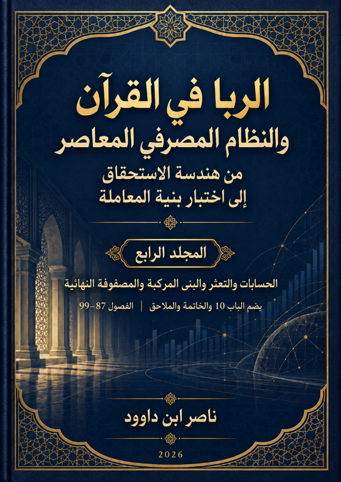

132. الربا في القرآن والنظام المصرفي المعاصر — المجلد الرابع

دراسة المنتجات المالية ومصفوفة المتغيرات الموحدة وإعادة الاختبار المستقل، مع إبقاء نتائج النماذج التشغيلية في مرتبتها البحثية.
النسخة الإنجليزية تكييف مفاهيمي مختصر وليست ترجمة حرفية كاملة؛ يبقى النص العربي المرجع الأساسي.
قراءة PDF داخل الموقع / Read the PDF on this website
جارٍ تجهيز القارئ… / Preparing the reader…
ملخص الكتاب وفهرسه الموضوعي (مقتطف نصي للفهرسة والبحث)
ا
الربا في القرآن والنظام المصرفي المعاصر
دليل المجلدات الأربعة
من هندسة الاستحقاق إلى اختبار بنية المعاملة
ينتظم هذا الكتاب في أربعة مجلدات متكاملة تسير من استقراء موارد الربا في القرآن واختبار المرشحات الدلالية، إلى بناء أدوات التدقيق البنيوي، ثم تطبيقها على صور التمويل والمعاملات المصرفية المعاصرة. وقد قُسّم حفاظًا على وحدة كل بحث، ولتيسير القراءة والمراجعة دون فصل النتائج عن شروطها وحدودها.
المجلد الأول — الأبواب 1–3 | الفصول 1–25
تأسيس المدونة، وتفكيك المرشحات، والبحث عن الفاصل.
المجلد الثاني — الأبواب 4–7 | الفصول 26–65
هندسة الاستحقاق، وشبكة المثاني، ونموذج تدقيق المعاملة.
المجلد الثالث — الباب 8 وبداية الباب 9 | الفصول 66–86
المختبر المصرفي، والدَّين السيادي، وبداية مختبر المنتجات.
المجلد الرابع — تتمة الباب 9 والباب 10 | الفصول 87–99
استكمال المنتجات المالية، والمصفوفة النهائية، والخاتمة والملاحق.
وحدة المنهج وحدود النتائج
تظل المدونة القرآنية مرجع اختبار المفاهيم، وتظل الوثائق المالية والمصرفية مصادر لوصف التطبيقات لا لتعريف اللفظ القرآني. ويحافظ العمل في مجلداته الأربعة على أن التعريف النهائي للربا غير مغلق، وأن جاهزية التصنيف مفتوحة وغير مجتازة؛ أما QTAM (نموذج تدقيق المعاملة القرآني) وUTVM (مصفوفة المتغيرات الموحدة) فهما أداتان للتدقيق والوصف لا لإصدار حكم آلي.
يمكن قراءة كل مجلد على حدة، مع الرجوع إلى ما سبقه لفهم منشأ المصطلحات ودرجات اليقين. وتُستكمل الفهارس وأرقام الصفحات تلقائيًا في Word بالاعتماد على الأنماط الهرمية المعتمدة.
ناصر ابن داوود | 2026
فهرس المجلد الرابع
فهرس المجلد الرابع 3
الباب 9 — - تكملة الباب 9-: البنك التقليدي والبنك الإسلامي كمختبرين 5
الفصل 87 — بطاقات الائتمان 5
الفصل 88 — الحسابات والودائع 49
الفصل 89 — الودائع الاستثمارية 85
الفصل 90 — إعادة الجدولة 120
الفصل 91 — غرامات التأخير 160
الفصل 92 — التعثر والإعسار 197
الفصل 93 — الصكوك والبنى المركبة 229
الباب 10 — المصفوفة النهائية وإعادة الاختبار 270
الفصل 94 — بناء مصفوفة المتغيرات الموحدة 270
الفصل 95 — مصفوفة الأصل والملكية وانتقال الحق 305
الفصل 96 — مصفوفة الدين والزمن والعنصر الإضافي 326
الفصل 97 — مصفوفة أساس المطالبة وحد الحق المتبادل 347
الفصل 98 — مصفوفة النتيجة ورتبة الادعاء 371
الفصل 99 — كيف يعيد باحث آخر الاختبار؟ 392
1 الخاتمة العامة 415
C-01 — ما استطعنا قوله 415
C-02 — ما قاوم 419
C-03 — ما بقي مفتوحًا 420
C-04 — ما امتنعنا عن قوله 421
C-05 — حدود QTAM (نموذج تدقيق المعاملة القرآني) 422